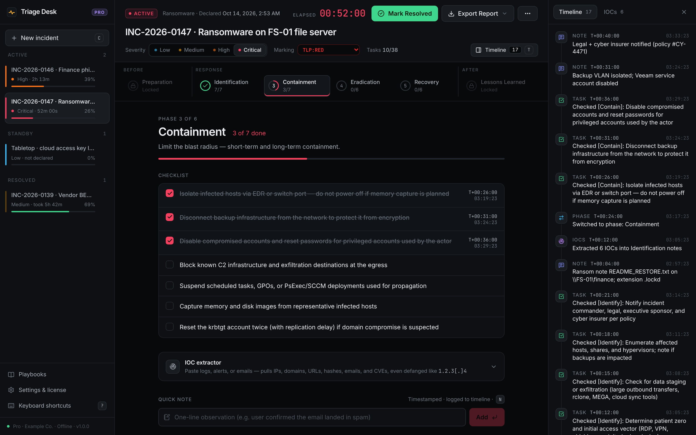
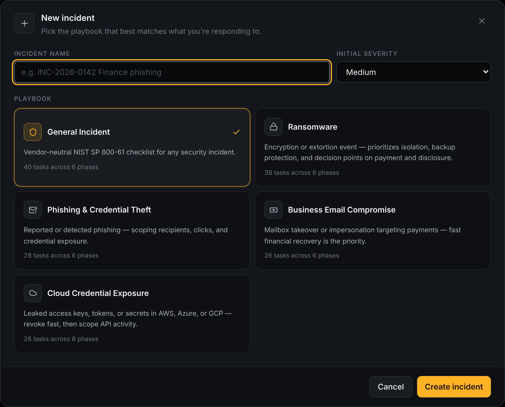
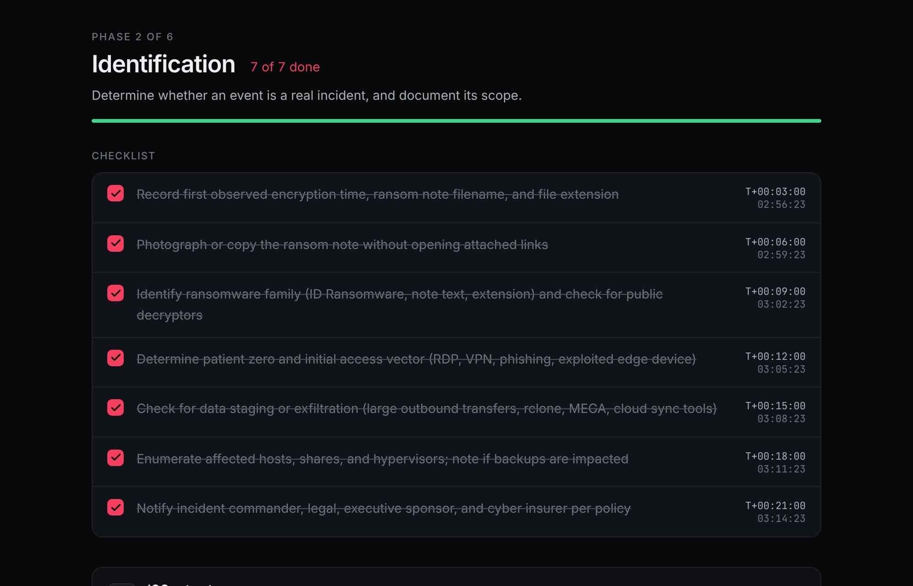
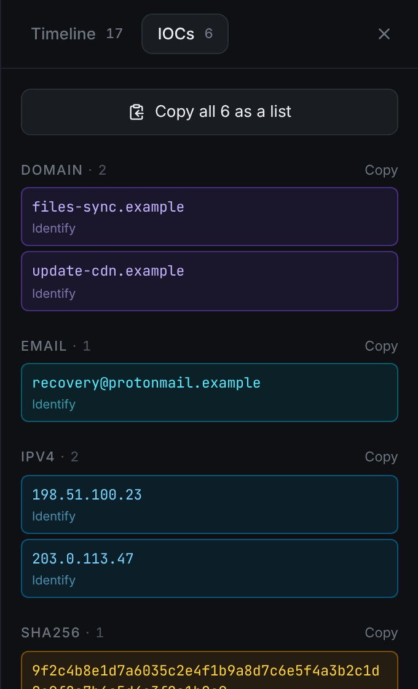
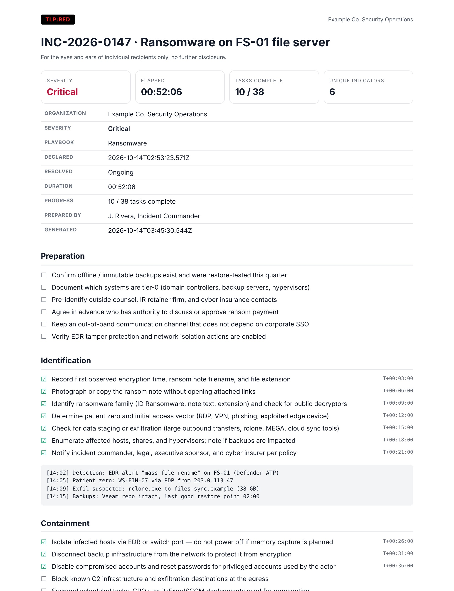

Offline incident response · NIST SP 800-61
Run the incident.
Not the spreadsheet.
Triage Desk gives your responders a playbook for every phase, a timeline that records itself, IOC extraction, and a TLP-marked report at the end. It is a single HTML file. It never touches the network.
- T+00:00Incident declared · severity High
- T+00:02Severity changed: High → Critical
- T+00:12Extracted 6 IOCs into Identification
- T+00:21Notified legal, exec sponsor, insurer
- T+00:26Isolated infected hosts via EDR
- T+00:31Backup VLAN disconnected
- T+00:52Blocking C2 at the egress…

Every incident carries a FIRST TLP 2.0 marking, and every report you export is stamped with it, so the people you share it with know exactly how far it can travel.
The problem
Your IR plan is a PDF nobody opens at 3 a.m.
When the alert fires, responders improvise in chat threads and scratch files. Afterwards, nobody can say exactly what happened when.
When did we first know?
Leadership, legal, and the insurer all ask. The answer is buried in a chat thread and three people’s memories.
Did anyone rotate the service account?
Without a shared checklist, critical steps get skipped or done twice while the clock runs.
Where’s the report?
The post-incident write-up takes days of reconstruction, so lessons learned never get written down.
How it works
One incident, start to finish.
This is the order your responders actually work in. Triage Desk keeps time the whole way through.
-
T−00:01Pick a playbook
Start from a scenario, not a blank page
Choose the playbook that matches what you are seeing. Each one has tasks for all six NIST phases, written for responders.
GeneralRansomwarePhishingBusiness email compromiseCloud credential exposure+ your own
-
T+00:00Declare
The clock starts and the timeline records itself
Declaring starts the incident clock and moves the team into Identification. From then on, every checked task, phase change, severity change, and note is stamped with T+ time.
- Phases lock and unlock with the incident lifecycle
- Every completed task shows when it was done
- Keyboard shortcuts for every common action

-
T+00:12Extract indicators
Paste the mess, get clean IOCs
Drop in log lines, alert payloads, or a phishing email. A Rust engine compiled to WebAssembly pulls out IPs, domains, URLs, hashes, emails, and CVEs, including defanged ones like hxxps:// and 1.2.3[.]4.
- Deduplicated across the whole incident
- Shows which phase each indicator surfaced in
- One click copies a ready-to-paste blocklist

-
T+05:42Resolve and report
The report is ready when you are
Mark the incident resolved and Lessons Learned opens. Export a TLP-marked report as plain text, Markdown, or a print-ready page you save as PDF, with your organization’s name on it.
- Summary, checklist with completion times, notes, IOC index, timeline
- Escapes everything, so pasted attacker content stays inert

See it run
A phishing incident in under a minute.
Security
Built for people who read the source.
Incident notes are among the most sensitive data a company has. Triage Desk is designed so they stay on the responder’s machine.
Zero network access, enforced by the browser
The app ships with a strict Content-Security-Policy. It cannot load remote code, send data, or phone home. Open DevTools and check.
default-src 'none'; script-src 'sha256-…' 'wasm-unsafe-eval'; style-src 'unsafe-inline'; img-src 'self' data:; font-src 'self' data:; connect-src data:; object-src 'none'; base-uri 'none'; form-action 'none'
Offline license keys
Pro keys are Ed25519-signed and verified locally. There is no license server to reach, so it works on isolated networks.
Hardened against hostile input
Responders paste attacker-controlled text all day. Imports are validated, and exported reports escape everything and carry their own lockdown policy.
Your data, your format
Back up the whole workspace to one JSON file at any time, free. Playbooks import and export as JSON too. Nothing is locked in.
Nothing to install
No agent, no admin rights, no server. Copy one file to an analyst laptop or a jump box, or host it on an internal web server.
Compare
Somewhere between a wiki page and a SOAR platform.
Triage Desk is not an automation platform. It is the structured workspace your team opens the moment an incident starts.
| Capability | Triage Desk | Docs, wikis & spreadsheets | Hosted IR / SOAR platforms |
|---|---|---|---|
| Time to first incident | Minutes: open the file | Minutes, but no structure | Weeks of rollout |
| Scenario playbooks per phase | Yes, 5 built in + custom | If someone wrote them | Yes |
| Automatic T+ timeline | Yes | No | Yes |
| IOC extraction | Yes, offline | No | Yes |
| Works air-gapped | Yes | Sometimes | Rarely |
| Incident data leaves your machine | Never | Depends on the tool | Stored by the vendor |
| Automated response & integrations | No, by design | No | Yes |
| Real-time multi-user editing | No, one workspace per analyst | Yes | Yes |
| Price | Free, or $59 once | Free | Annual contract |
Who it’s for
Anyone who gets paged when something is on fire.
SOC analysts
A consistent, timestamped record of every investigation, ready to hand to the next shift.
IR consultants & MSSPs
One incident per client, branded TLP-marked reports, and nothing stored on someone else’s cloud.
On-call & IT teams
Security incidents without a dedicated SOC. The playbook tells you what to do next.
Tabletop exercises
Run drills on the same playbooks you use for real, and keep the timeline as the after-action record.
Pricing
Buy it once. Keep it forever.
Every license is perpetual and includes a year of updates. When the year ends, nothing stops working.
Free
- One incident at a time
- General NIST playbook
- Automatic timeline and IOC extractor
- TLP-marked plain-text reports
- Backup and restore
Pro BEST FOR ANALYSTS
- Unlimited incidents side by side
- Ransomware, phishing, BEC and cloud playbooks
- Custom playbooks with JSON import/export
- Branded Markdown and print-ready PDF reports
- 12 months of updates
Team
- Everything in Pro
- Up to 10 analysts
- Host internally on any static web server
- Priority email support
- 12 months of updates
Prices in USD. Sales tax or VAT is added at checkout where it applies. Need more than 10 seats, or a trial key for procurement? Get in touch.
FAQ
Questions responders ask.
Where is my incident data stored?
In your browser’s local storage on your machine, and nowhere else. Triage Desk has no server and makes no network requests. Export a backup file whenever you like.
Can I run it on an air-gapped network?
Yes. Copy the single HTML file to the machine and open it in Chrome, Edge, Firefox, or Safari. License keys are verified offline.
What happens when my year of updates ends?
Nothing breaks. Your key keeps working forever on every version released during your update year. Renew only if you want newer releases.
Does it make us compliant?
It follows the NIST SP 800-61 lifecycle and produces timestamped records, which helps with documentation. It does not make you compliant on its own, and it is not legal advice.
Can we tailor the playbooks?
Yes, with Pro. Duplicate any built-in playbook and edit it, or write your own. Share them with your team as JSON files.
Is it multi-user?
Each analyst runs their own workspace. Teams share playbooks as JSON files and incidents through backups or exported reports. There is no real-time co-editing.
Which systems does it run on?
Windows, macOS, and Linux, in any current browser. Every release is tested in Chromium, Firefox, WebKit, and Microsoft Edge.
Do you offer refunds?
Yes. See the license agreement included with the download for the refund window.
Ready when the pager goes off